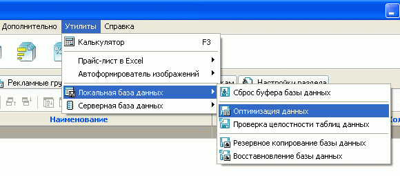

При появлении разного рода несогласованности данных, а также в случае сбоя или аварийного завершения работы программы после проверки целостности таблиц данных рекомендуется выполнять оптимизацию данных. Оптимизация заключается в удалении неиспользуемых записей из таблиц БД и проверки на согласованность существующих.
Утилита оптимизации вызывается из главного меню программы Melbis Shop "Утилиты - Локальная база данных - Оптимизация данных".

По окончании процесса оптимизации выдается информационное сообщение: